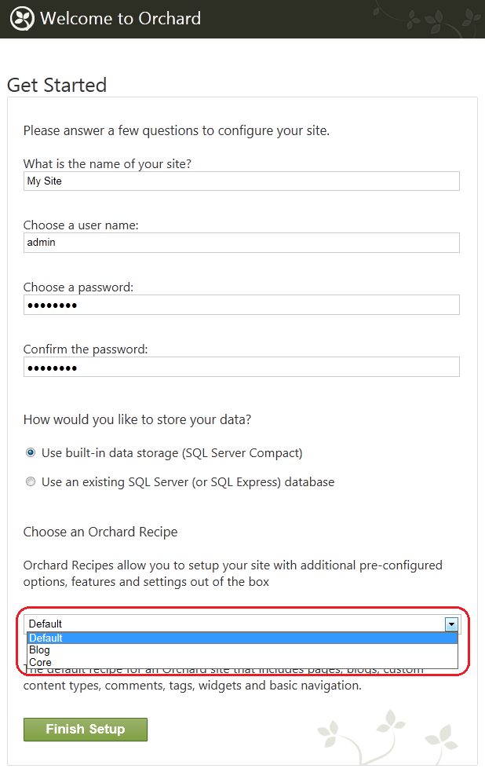
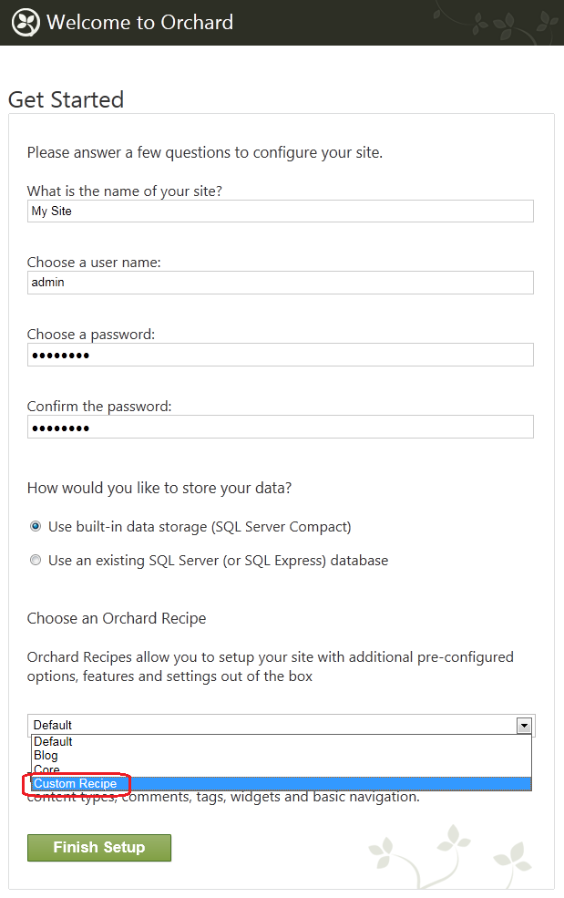
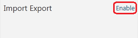
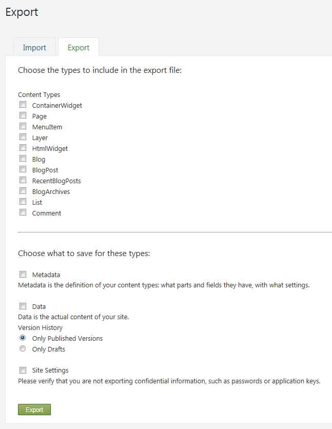
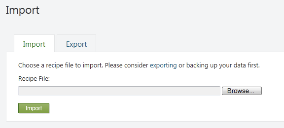

Orchard simplifies the process of setting up a new website by letting you use website recipes. A recipe is an XML file that contains the startup configuration for an Orchard website. When you start Orchard for the first time, you can select a recipe that best matches the type of site you want to set up. For example, if you want your website to be a blog, you can select the Blog recipe, and much of the configuration work will be done for you.
Orchard允许您使用_website recipes_，简化了设置新网站的过程。配方是一个XML文件，其中包含Orchard网站的启动配置。当您第一次启动Orchard时，您可以选择最适合您要设置的站点类型的配方。例如，如果您希望您的网站成为博客，则可以选择 Blog 配方，并且将为您完成大部分配置工作。
You can create your own recipes and customize the process of setting a website and configuring Orchard features. Recipes can also instruct Orchard to download and install modules and themes from the Orchard Gallery during website setup.
您可以创建自己的配方并自定义设置网站和配置Orchard功能的过程。食谱还可以指示Orchard在网站设置期间从Orchard Gallery下载和安装模块和主题。
This article describes how to use recipes, how to create custom recipes, export or import recipes, and how to create a specialized distribution of Orchard using recipes.
本文介绍如何使用配方，如何创建自定义配方，导出或导入配方，以及如何使用配方创建Orchard的专用分发。
Using a Recipe to Create a Website
使用配方创建网站
When you first set up an Orchard website, the setup page that is displayed contains a list of recipes. You can choose a recipe to base your new website on.
首次设置Orchard网站时，显示的设置页面包含配方列表。您可以选择基于新网站的配方。

The initial list contains the following recipes:
初始列表包含以下配方：
-
Default. The default recipe for an Orchard site that includes pages, blogs, custom content types, comments, tags, widgets, and basic navigation.
-
默认。 Orchard站点的默认配方，包括页面，博客，自定义内容类型，注释，标签，小部件和基本导航。
-
Blog. A recipe that provides an installation profile with features for a personal blog.
-
博客。一种配方，提供具有个人博客功能的安装配置文件。
-
Core. A recipe that provides the Orchard framework with limited end-user functionality that can be used during development.
-
核心。为Orchard框架提供可在开发期间使用的有限最终用户功能的配方。
After you choose a recipe and click Finish Setup, Orchard creates the website using the selected recipe and opens the home page.
选择配方并单击完成设置后，Orchard使用所选配方创建网站并打开主页。
How Recipes Work
食谱如何运作
An Orchard recipe is an XML file that contains website configuration information. The following example shows the contents of the default recipe file.
Orchard配方是包含网站配置信息的XML文件。以下示例显示默认配方文件的内容。
<?xml version="1.0"?>
<Orchard>
<Recipe>
<Name>Default</Name>
<Description>The default recipe for an Orchard site that includes pages, blogs, custom content types, comments, tags, widgets and basic navigation.</Description>
<Author>The Orchard Team</Author>
<WebSite>http://orchardproject.net</WebSite>
<Tags></Tags>
<Version>1.0</Version>
<IsSetupRecipe>true</IsSetupRecipe>
</Recipe>
<Feature enable="Orchard.Blogs,Orchard.Comments,Orchard.Tags,Orchard.Alias,Orchard.Autoroute,
TinyMce,Orchard.MediaLibrary,Orchard.ContentPicker,Orchard.PublishLater,
Orchard.jQuery,Orchard.Widgets,Orchard.ContentTypes,
Orchard.Scripting,Orchard.Scripting.Lightweight,PackagingServices,Orchard.Packaging,
Orchard.Projections,Orchard.Fields,Orchard.OutputCache,Orchard.Taxonomies,Orchard.Workflows,
Orchard.Layouts,Orchard.Layouts.Tokens,
TheThemeMachine" />
<Metadata>
<Types>
<Page ContentTypeSettings.Draftable="True" TypeIndexing.Indexes="Search">
<TagsPart />
<LocalizationPart />
<TitlePart/>
<AutoroutePart />
<MenuPart />
</Page>
<BlogPost ContentTypeSettings.Draftable="True" TypeIndexing.Indexes="Search">
<CommentsPart />
<TagsPart />
<LocalizationPart />
<TitlePart/>
<AutoroutePart />
</BlogPost>
</Types>
<Parts>
<BodyPart BodyPartSettings.FlavorDefault="html" />
</Parts>
</Metadata>
<Settings />
<Migration features="*" />
<Command>
layer create Default /LayerRule:"true" /Description:"The widgets in this layer are displayed on all pages"
layer create Authenticated /LayerRule:"authenticated" /Description:"The widgets in this layer are displayed when the user is authenticated"
layer create Anonymous /LayerRule:"not authenticated" /Description:"The widgets in this layer are displayed when the user is anonymous"
layer create Disabled /LayerRule:"false" /Description:"The widgets in this layer are never displayed"
layer create TheHomepage /LayerRule:"url '~/'" /Description:"The widgets in this layer are displayed on the home page"
site setting set baseurl
menu create /MenuName:"Main Menu"
page create /Slug:"welcome-to-orchard" /Title:"Welcome to Orchard!" /Path:"welcome-to-orchard" /Homepage:true /Publish:true /UseWelcomeText:true
menuitem create /MenuPosition:"0" /MenuText:"Home" /Url:"~/" /MenuName:"Main Menu"
widget create MenuWidget /Title:"Main Menu" /RenderTitle:false /Zone:"Navigation" /Position:"1" /Layer:"Default" /Identity:"MenuWidget1" /MenuName:"Main Menu"
theme activate "The Theme Machine"
</Command>
</Orchard>
The following sections of a recipe file are the elements that are most important to understand:
配方文件的以下部分是最重要的要理解的元素：
-
Recipe. This section contains metadata about the recipe, such as its name and description.
-
食谱。此部分包含有关配方的元数据，例如其名称和描述。
-
Feature. This section lists module features that Orchard will enable.
-
特征。本节列出了Orchard将启用的模块功能。
-
Metadata. This section provides configuration for the types, parts, and fields that Orchard contains.
-
元。本节提供Orchard包含的类型，部件和字段的配置。
-
Settings. This section provides a way to configure website settings.
-
[设定]。本节提供了配置网站设置的方法。
-
Command. This section lists commands that Orchard will run against your website in order to complete the setup. For more information about Orchard commands, see Using the Command-line Interface.
-
命令。本节列出了Orchard将针对您的网站运行的命令，以便完成设置。有关Orchard命令的更多信息，请参阅[使用命令行界面]（使用命令行界面）。
Creating a Custom Recipe
创建自定义配方
You can create your own recipe, which can then be added to the setup page or to your own module. Recipes added to the setup page can be selected by the user only during site setup; recipes added to a module can be executed by the user after site setup.
您可以创建自己的配方，然后可以将其添加到设置页面或您自己的模块中。只有在站点设置期间，用户才能选择添加到设置页面的配方;添加到模块的配方可以在站点设置后由用户执行。
To get started with creating a custom recipe, you can select an existing recipe that you can tailor to your purposes. The following example shows how to start with the default recipe (default.recipe.xml) and add the Bing.Maps module and a theme, both of which will be downloaded and enabled during setup. The recipe also creates a blog and a page that displays the map widget. Finally, the recipe adds layers and menu tabs for the blog and map page.
要开始创建自定义配方，您可以选择可根据您的目的定制的现有配方。以下示例显示如何从默认配方_（default.recipe.xml）_开始，并添加 Bing.Maps 模块和主题，这两个模块将在安装过程中下载并启用。该配方还创建了一个博客和一个显示地图窗口小部件的页面。最后，该配方为博客和地图页面添加了图层和菜单选项卡。
<?xml version="1.0"?>
<Orchard>
<Recipe>
<Name>Custom Recipe</Name>
<Description>A recipe that includes a landing page with blog on a second tab.</Description>
<Author>The Orchard Team</Author>
<WebSite>http://orchardproject.net</WebSite>
<Tags></Tags>
<Version>1.0</Version>
<IsSetupRecipe>true</IsSetupRecipe>
</Recipe>
<Module packageId="Orchard.Module.Bing.Maps" />
<Theme packageId="Orchard.Theme.Dark" current="true" />
<Feature enable="Orchard.Blogs,Orchard.Comments,Orchard.Tags,
Orchard.Lists,TinyMce,Orchard.Media,Orchard.MediaPicker,Orchard.PublishLater,
Orchard.jQuery,Orchard.Widgets,Orchard.Widgets.PageLayerHinting,Orchard.ContentTypes,
Orchard.Scripting,Orchard.Scripting.Lightweight,
PackagingServices,Orchard.Packaging,Gallery,Gallery.Updates,
TheThemeMachine,Bing.Maps" />
<Metadata>
<Types>
<Page ContentTypeSettings.Draftable="True" TypeIndexing.Included="true">
<TagsPart />
<LocalizationPart />
</Page>
<BlogPost ContentTypeSettings.Draftable="True" TypeIndexing.Included="true">
<CommentsPart />
<TagsPart />
<LocalizationPart />
</BlogPost>
</Types>
<Parts>
<BodyPart BodyPartSettings.FlavorDefault="html" />
</Parts>
</Metadata>
<Settings />
<Migration features="*" />
<Command>
layer create Default /LayerRule:"true"
layer create Authenticated /LayerRule:"authenticated"
layer create Anonymous /LayerRule:"not authenticated"
layer create Disabled /LayerRule:"false"
layer create TheHomepage /LayerRule:"url '~/'"
layer create Blog /LayerRule:"url '~/Blog'"
layer create Maps /LayerRule:"url '~/Maps'"
page create /Slug:"welcome-to-orchard" /Title:"Welcome to Orchard!" /Path:"welcome-to-orchard" /Homepage:true /Publish:true /UseWelcomeText:true
blog create /Slug:"blog" /Title:"Blog" /Homepage:false /Description:"This is your Orchard Blog."
page create /Slug:"maps" /Title:"Bing Maps" /Path:"bing-maps" /Homepage:false /Publish:true /UseWelcomeText:false
widget create HtmlWidget /Title:"First Leader Aside" /Zone:"TripelFirst" /Position:"5" /Layer:"TheHomepage" /UseLoremIpsumText:true
widget create HtmlWidget /Title:"Second Leader Aside" /Zone:"TripelSecond" /Position:"5" /Layer:"TheHomepage" /UseLoremIpsumText:true
widget create HtmlWidget /Title:"Third Leader Aside" /Zone:"TripelThird" /Position:"5" /Layer:"TheHomepage" /UseLoremIpsumText:true
menuitem create /MenuPosition:"1" /MenuText:"Home" /Url:"" /OnMainMenu:true
menuitem create /MenuPosition:"2" /MenuText:"Blog" /Url:"~/Blog" /OnMainMenu:true
menuitem create /MenuPosition:"3" /MenuText:"Maps" /Url:"~/Maps" /OnMainMenu:true
</Command>
</Orchard>
Note the following about the changes made to the default recipe:
请注意以下有关对默认配方所做的更改：
-
Module element. This element identifies a module that will be downloaded from the Orchard Gallery on the website. This does not enable the features in the module; it only downloads it. To enable a module feature, add it to the
Featureelement as shown in the example. -
模块元素。此元素标识将从网站上的Orchard Gallery下载的模块。这不会启用模块中的功能;它只下载它。要启用模块功能，请将其添加到“Feature”元素，如示例中所示。
-
Theme element. This element identifies a theme that will be downloaded from the Orchard Gallery. If the current attribute is set to true, the theme becomes the current theme and is applied to the website. Otherwise, it will just be downloaded. It is also possible to enable a theme by using the
enable="true"attribute. Otherwise the theme is initially disabled. If you usecurrent="true", the theme is automatically enabled. -
主题元素。此元素标识将从Orchard Gallery下载的主题。如果 current 属性设置为true，则主题将成为当前主题并应用于网站。否则，它将被下载。也可以使用
enable =“true”属性启用主题。否则，主题最初被禁用。如果你使用current =“true”，主题会自动启用。
Important: The Module and Theme elements must appear in the recipe immediately after the Recipe element.
重要：模块和主题元素必须在 Recipe 元素之后立即出现在配方中。
-
layer create command. This was added in order to create the Blog and Maps layer.
-
图层创建命令。添加此项是为了创建 Blog 和 Maps 图层。
-
blog create command. This was added in order to create the blog.
-
博客创建命令。这是为了创建博客而添加的。
-
page create command. This was added in order to create the Maps page.
-
page create 命令。添加此项是为了创建 Maps 页面。
-
menuitem create command. This was added in order to create the Blog and Maps menu tabs.
-
menuitem create 命令。添加此项是为了创建 Blog 和 Maps 菜单标签。
In addition to the attributes shown here for the Module and Theme elements, both elements support a version attribute. If the version is specified, that version will be downloaded from the Orchard Gallery. Both elements also have a repository attribute. By default, the repository attribute points to the Orchard Gallery. However, you can set it to any feed URL.
除了此处显示的 Module 和 Theme 元素的属性外，这两个元素都支持 version 属性。如果指定了版本，则将从Orchard Gallery下载该版本。这两个元素还具有 repository 属性。默认情况下， repository 属性指向Orchard Gallery。但是，您可以将其设置为任何Feed网址。
To add your custom recipe to the setup page use the IsSetupRecipe attribute in the Recipe element as shown above, and put the recipe XML file into the Recipes folder (or its subfolder) of a module. Note that recipe files should have a name ending in .recipe.xml, e.g. Custom.recipe.xml. When you set up a new Orchard website, the recipe list will contain your setup recipe.
要将自定义配方添加到设置页面，请使用如上所示的Recipe元素中的IsSetupRecipe属性，并将配方XML文件放入模块的_Recipes_文件夹（或其子文件夹）中。请注意，配方文件的名称应以_.recipe.xml_结尾，例如_Custom.recipe.xml_。当您设置新的Orchard网站时，配方列表将包含您的设置配方。

Note that recipes used for importing mustn't contain an IsSetupRecipe element or it should be set to false.
请注意，用于导入的配方不得包含“IsSetupRecipe”元素，也不应将其设置为“false”。
Importing and Exporting a Recipe
导入和导出配方
Orchard enables you to import and export recipes from and to the web server. It uses the Import Export module, which is disabled by default. Therefore you must enable the module to use this feature.
Orchard使您可以从Web服务器导入和导出配方。它使用 Import Export 模块，默认情况下禁用该模块。因此，您必须启用该模块才能使用此功能。
To enable the Import Export module, open the dashboard and click Modules. On the Modules page, select the Features tab. Under Content, locate the Import Export feature and click Enable. A message at the top of the page will notify you when the feature is enabled. You will also see Import/Export listed in the dashboard feature list.
要启用导入导出模块，请打开仪表板，然后单击模块。在 Modules 页面上，选择 Features 选项卡。在内容下，找到导入导出功能，然后单击启用。页面顶部的消息将在启用该功能时通知您。您还会在仪表板功能列表中看到导入/导出。

To export a recipe, open the dashboard and click Import/Export. Click the Export tab and then choose the types, metadata, data, and settings to include in the export file. When you are finished, click Export.
要导出配方，请打开仪表板，然后单击导入/导出。单击导出选项卡，然后选择要包括在导出文件中的类型，元数据，数据和设置。完成后，单击导出。

To import a recipe, click Import/Export and then click the Import tab. Browse to the recipe file and click Import.
要导入配方，请单击导入/导出，然后单击导入选项卡。浏览到配方文件，然后单击导入。

Creating a Specialized Distribution of Orchard
创建果园的专业化分布
Recipes simplify the process of creating a specialized distribution of Orchard. Using recipes (and optionally custom modules), you can configure a version of the Orchard platform that is optimized for nearly any type of website you can envision.
配方简化了创建Orchard专用分发的过程。使用配方（以及可选的自定义模块），您可以配置Orchard平台的版本，该版本针对您可以设想的几乎任何类型的网站进行了优化。
To create a specialized distribution of Orchard
创建Orchard的专业发行
- Enlist in the Orchard source code. For information about how to enlist in Orchard, see Setting Up a Source Enlistment.
1.加入Orchard源代码。有关如何在Orchard中登记的信息，请参阅[设置源登记]（设置 - 源 - 登记）。
- Sync to the latest build.
2.同步到最新版本。
- Create a custom recipe and add it to the Orchard.Web/Modules/Orchard.Setup/Recipes folder. If you want your recipe to be the only option, you can remove the other recipe files.
3.创建自定义配方并将其添加到_Orchard.Web / Modules / Orchard.Setup / Recipes_文件夹。如果您希望配方是唯一选项，则可以删除其他配方文件。
- Add any custom modules to the Orchard.Web/Modules folder.
4.将任何自定义模块添加到_Orchard.Web / Modules_文件夹。
- Compile the project.
5.编译项目。
- Distribute all files under the Orchard.Web folder.
6.分发_Orchard.Web_文件夹下的所有文件。